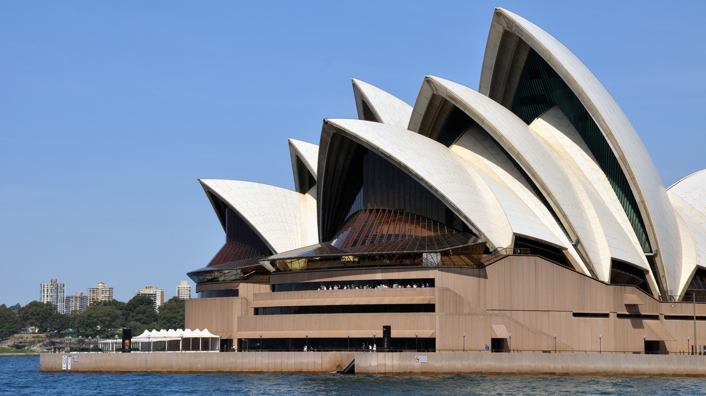
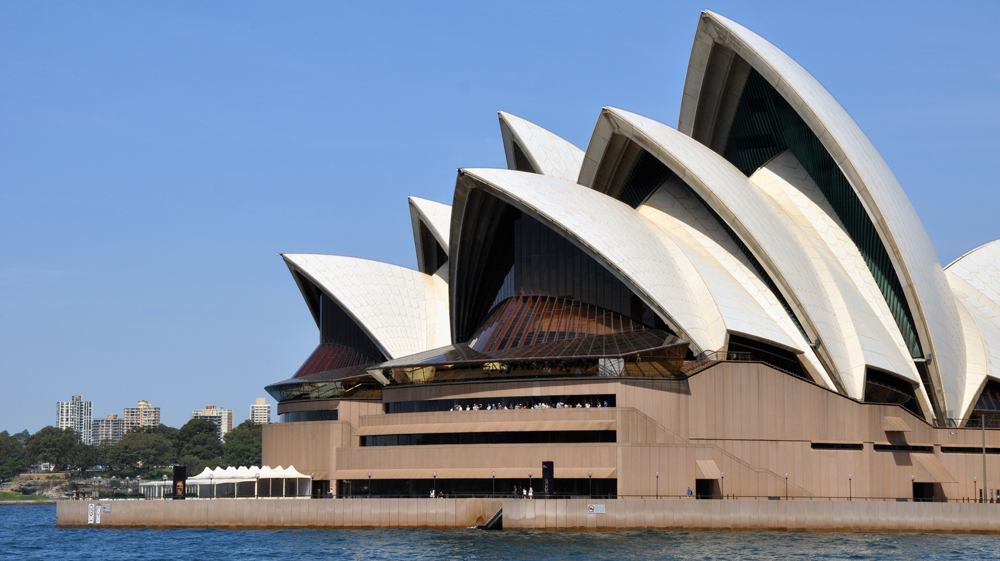
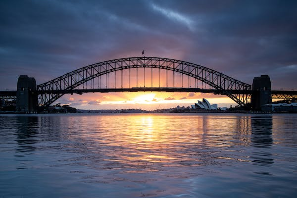
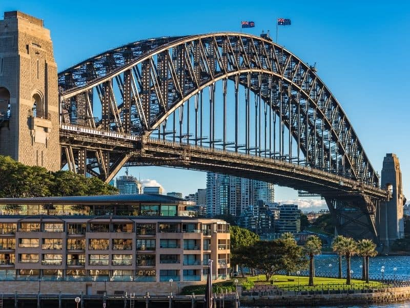
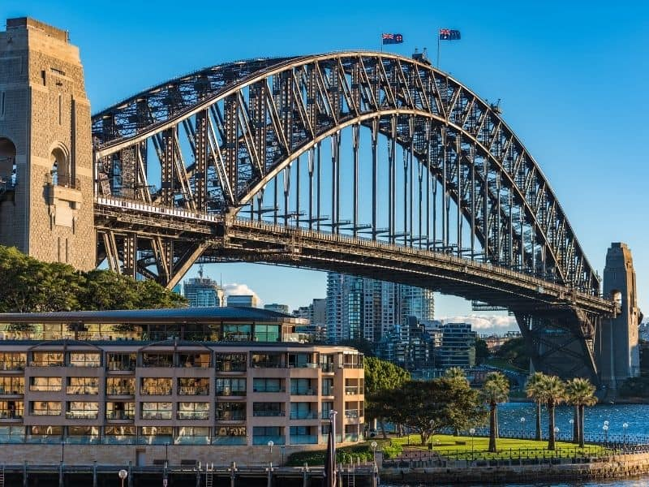
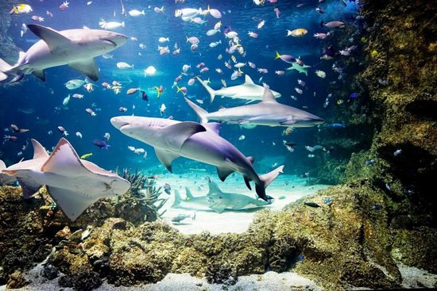

Top five places to visit in sydney
1. Opera House
The Sydney Opera House is a multi-venue performing arts centre in Sydney. Located on the foreshore of Sydney Harbour, it is widely regarded as one of the world's most famous and distinctive buildings and a masterpiece of 20th-century architecture.
 

2.Bondi Beach
The sweeping white-sand crescent of Bondi is one of Australia’s most iconic beaches. Reliable waves draw surfers while, nearby, hardy locals swim in the Icebergs ocean pool year-round. Trendy, health-conscious Sydneysiders head to laid-back cafes around Hall Street, while hip backpackers frequent the area's casual pubs. Walkers and joggers use the clifftop Bondi to Coogee Coastal Walk, with its dramatic scenery.


3.Harbour Bridge
The Sydney Harbour Bridge is a steel through arch bridge in Sydney, spanning Sydney Harbour from the central business district to the North Shore. The view of the bridge, the harbour, and the nearby Sydney Opera House is widely regarded as an iconic image of Sydney, and of Australia itself.



4.Sea Life Sydney Aquarium
SEA LIFE Sydney Aquarium is a public aquarium that features a large variety of Australian aquatic life, displaying more than 700 species comprising more than 13,000 individual fish and other sea and water creatures from most of Australia's water habitats.

